1.Get GarageBand
1a.Click to visit GarageBand Introduction Page
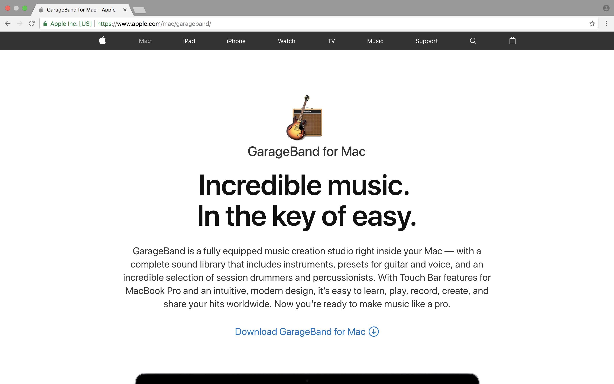
1b. Get this application from the App Store and download it .
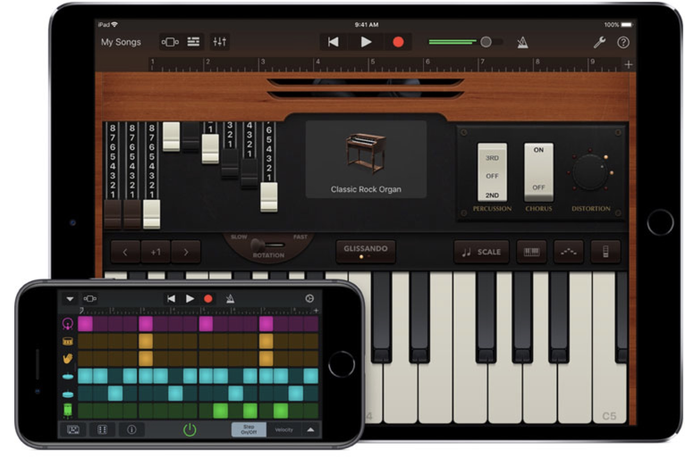
2.Choose Your Favorite Track. There are many options.
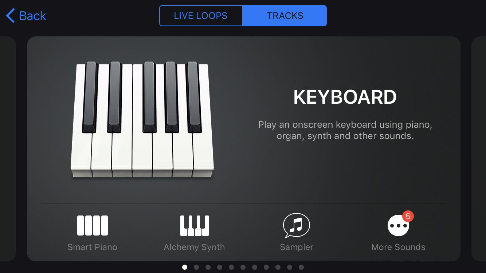
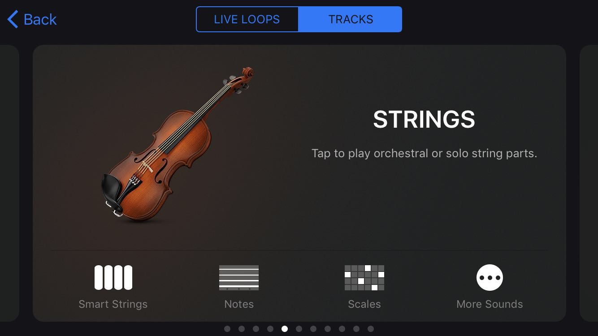
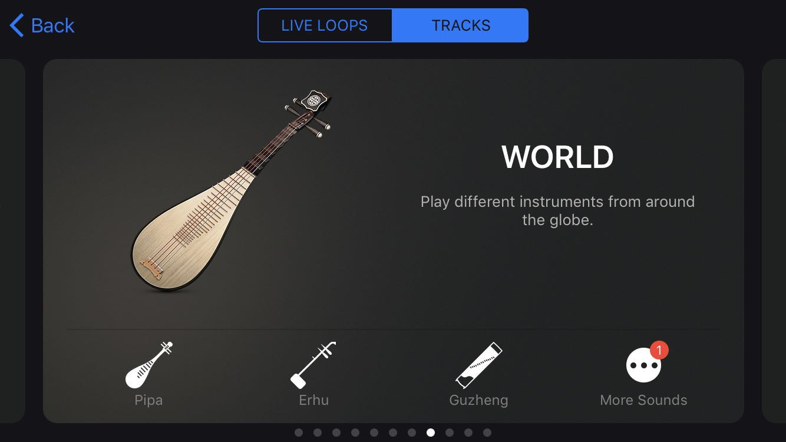
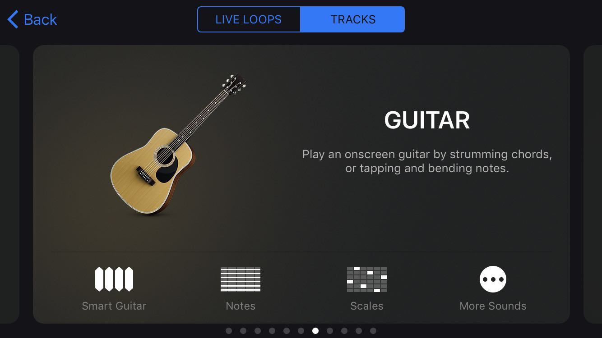
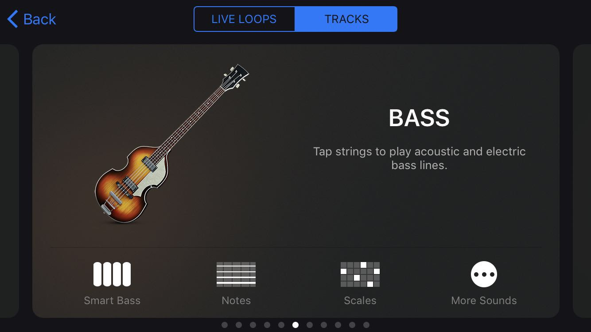
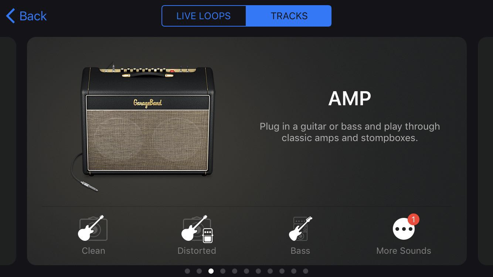
3.Record Your Own Music
3a. The round red bottom represents the start of a record.
3b. The triangle white bottom represents the play of a record.
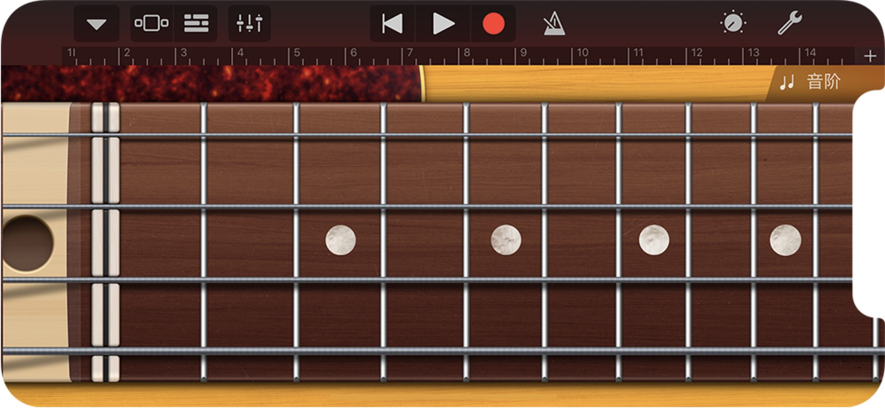
3c. Your record will autosave, and you can process it in the following interface.
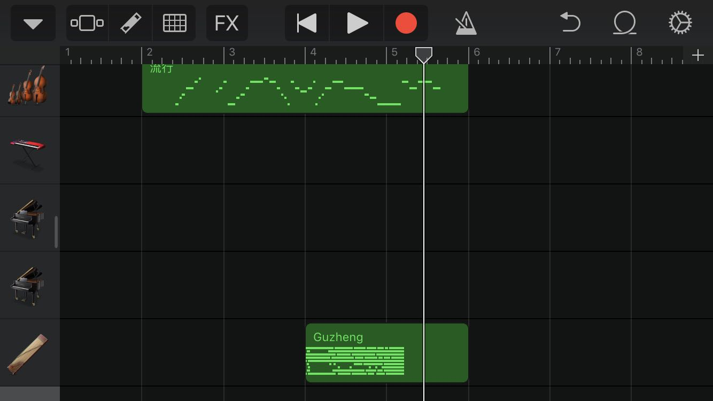
3d. Click the "FX", you can add some effects to your record.
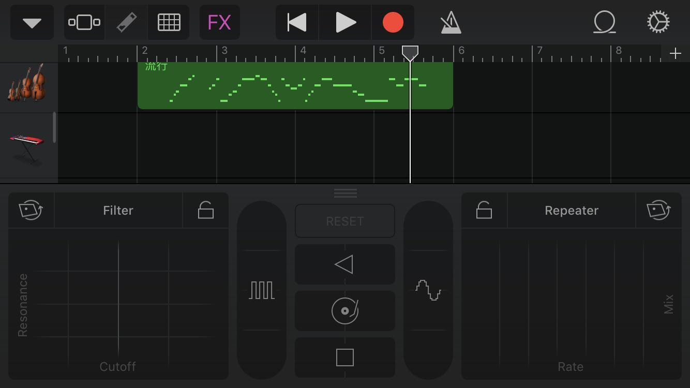
4.Share with Your Friends
4a.Enter into "My songs" and long-press on the icon.
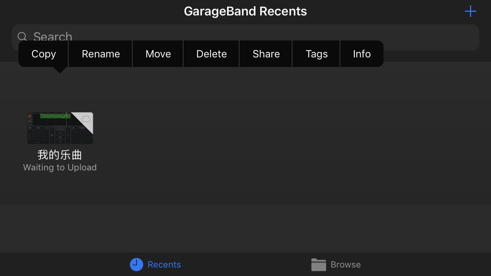
4b.You can share music with your friends through AirDrop or other Apps.